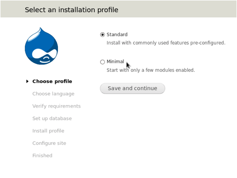
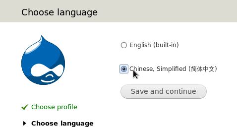
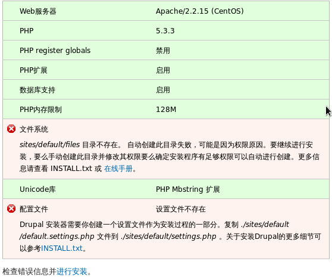
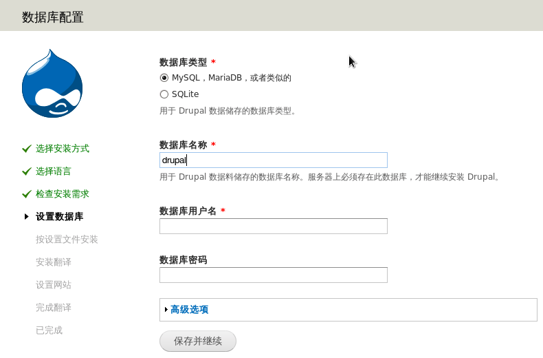

Drupal
Drupal为用户提供各种工具来管理网站，它可以帮助用户入门，建立自己的网站
1、下载drupal软件（https://www.drupal.org/project/drupal/releases/7.15）和XOOPS汉化包（http://drupalchina.cn/download/）
2、为drupal创建自己的数据库，我们起名为“drupal”
3、将drupal安装包解压到apache的网页根目录“/var/www/html/”，将汉化包放在drupal中
|
[root@localhost html]#
cp /wj/drupal-7.59.tar /var/www/html/ //拷贝压缩包
[root@localhost
html]# tar _xvf
drupal-7.59.tar //解压
[root@localhost
html]# mv drupal-7.59 drupal
//重命令，这样方便从浏览器打开
[root@localhost
html]# cp /wj/drupal-7.59.zh-hans-po drupal/profiles/standard/translations/
//将汉化包拷贝到指定地方
|
4、安装。在浏览器输入“127.0.0.1/drupal”，进入安装界面
1）选择普通安装

2）选择语言，如果没有拷贝汉化包，那么就无法选择汉语

3）这一步看到有几个错误

3-1）如果出现“php扩展”错误，那么就安装php-xml包
3-2）文件系统错误。我们需要在drupal目录下创建指定的文件，设置权限为777
|
[root@localhost
html]# cd drupal
[root@localhost
drupal]# mkdir sites/default/files
[root@localhost
drupal]# chmod 777 sites/default/files/
|
3-3）配置文件错误。用户可以安装上面的错误提醒，将default.settings.php复制一份，然后修改权限777
|
[root@localhost
drupal]# cp sites/default/default.settings.php sites/default/settings.php
[root@localhost
drupal]# chmod 777 sites/default/settings.php
|
4）设置数据库。此数据库就是我们在开始的时候创建的，如果你还不会使用mysql，那么可以尝试用phpMyAdmin来创建

5）正在安装
6）设置站点信息，包括邮箱、管理员账号、密码等内容
7）安装成功，在浏览器输入“127.0.0.1/drupal”就可以访问了
5、状态报告。登录drupal，选择“报告”->“状态报告”，这里可以看到上传进度还不能使用，需要安装PECL。另外，mysql还不支持4字节utf-8，我们需要开启这个功能。
6、安装PECL。首先要安装一些依赖软件php-devel、php-pear，然后才能安装PECL
|
[root@localhost
~]# yum install -y php-devel php-pecl php-pear
[root@localhost
~]# pecl install uploadprogress
Build process
completed successfully
Installing
'/usr/lib/php/modules/uploadprogress.so'
install ok:
channel://pecl.php.net/uploadprogress-1.0.3.1
configuration
option "php_ini" is not set to php.ini location
You should add
"extension=uploadprogress.so" to php.ini
|
7、修改php配置文件php.ini
|
[root@localhost
~]# gedit /etc/php.ini
extentsion=uploadprogress.so
|
8、修改mysql配置文件my.cnf
|
[root@localhost
~]# gedit /etc/my.cnf
[mysqld]
datadir=/var/lib/mysql
socket=/var/lib/mysql/mysql.sock
user=mysql
# Disabling
symbolic-links is recommended to prevent assorted security risks
symbolic-links=0
innodb_large_prefix=true
innodb_file_format=barracu
innodb_file_per_table=true
|
9、重启mysql和apache
|
[root@localhost
~]# service httpd restart
停止 httpd：
[确定]
正在启动 httpd：httpd:
Could not reliably determine the server's fully qualified domain name, using
localhost.localdomain for ServerName
[确定]
[root@localhost
~]# service mysqld restart
停止
mysqld：
[确定]
MySQL Daemon start.
正在启动
mysqld： [确定]
[root@localhost
~]#
|
10、修改settings权限，取消写入属性。
|
[root@localhost
drupal]# chmod 444 sites/default/settings.php
[root@localhost
drupal]# chmod 555 sites/default
|
Copyright@david
zhytwj2018@163.com